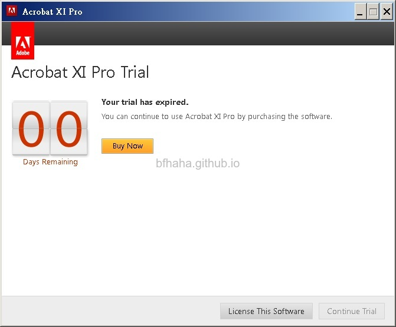
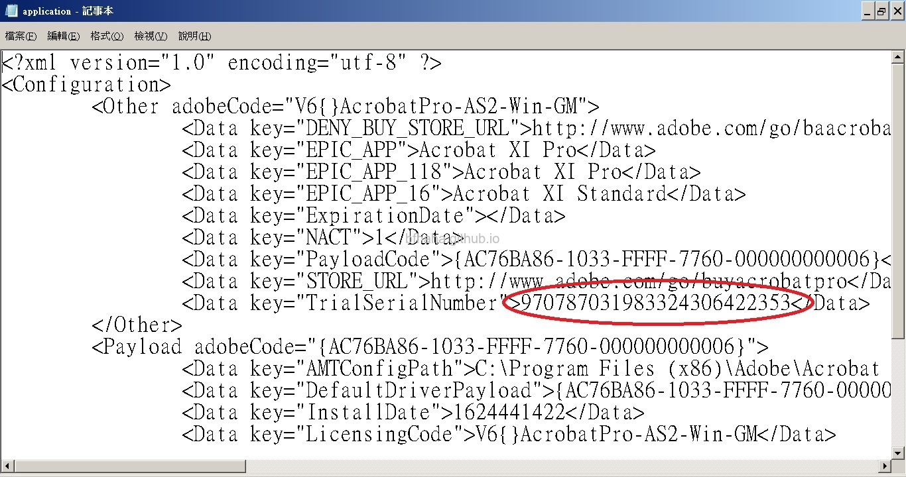
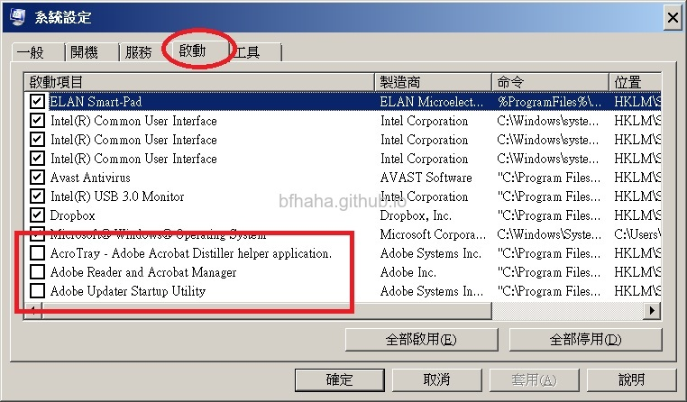
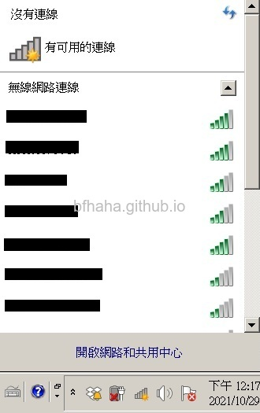
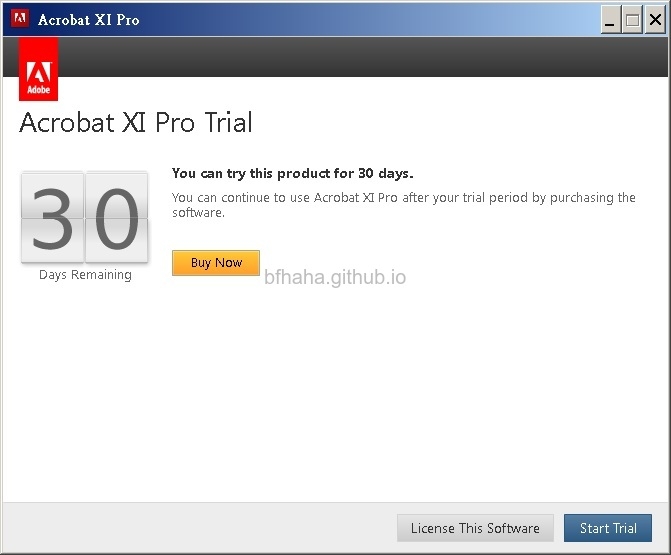

破解Adobe Acrobat XI Pro的30天試用限制
- 試用版在這裡下載。檔案為iso檔，可以用WinRAR解壓縮，解壓縮後安裝檔放在Acrobat11\Adobe Acrobat XI\Setup.exe。試用序號可以使用1118-1006-1955-6671-8758-7024。
- 安裝後按正常使用直到試用到期。

- 如果當初安裝時沒有更改安裝路徑，則到
C:\Program Files (x86)\Adobe\Acrobat 11.0\Acrobat\AMT資料夾中，裡面有個application.xml檔案，用記事本或文字編輯器打開。在TrialSerialNumber中，變更這組號碼，例如把最末一位數字加1這樣，像圖中的範例就是將53改成54。

- 注意到，有可能編輯後沒辦法直接存檔，就是按下存檔後，跳出另存新檔的要求，這是因為系統資料夾中的檔案是唯讀的，可以先另存新檔（檔名相同）將檔案儲存在桌面，再把修改過的檔案，移動到AMT資料夾中，會出現要求授權修改的確認。
- 再次開啟Adobe Acrobat XI Pro，會要求登入。

- 但選擇登入又會出現連線錯誤。

- 所以我們先把Adobe Acrobat XI Pro關閉，再把網路關掉。

- 再次開啟Adobe Acrobat XI Pro，可以看到試用期回復到30天了，按下Start Trial就可以繼續使用了。這時候再連線上網即可。

- 比較麻煩的是，以後要使用時都要在離線狀態下使用，否則會被強制關閉。建議也可以把更新關閉，按下鍵盤上的視窗鍵+R，輸入msconfig。
- 在啟動標籤中，取消勾選Adobe相關的更新。